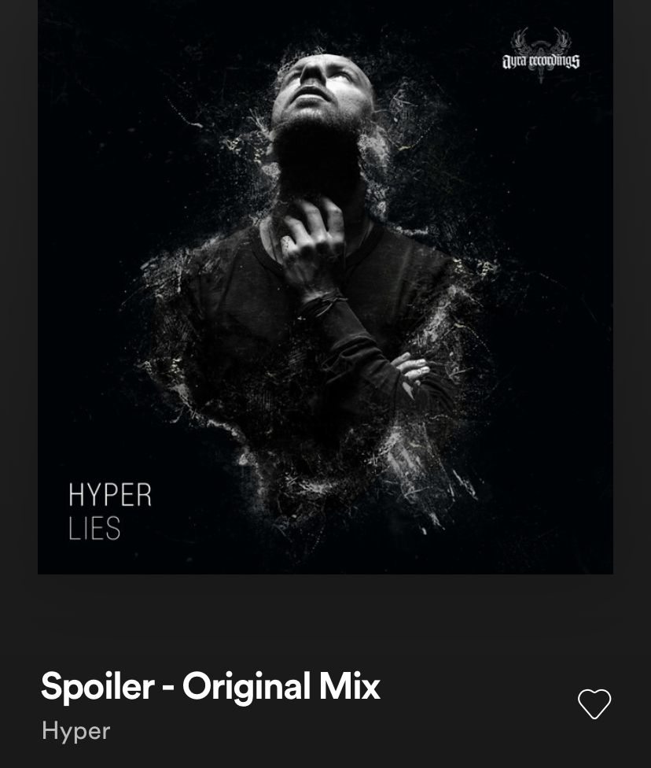
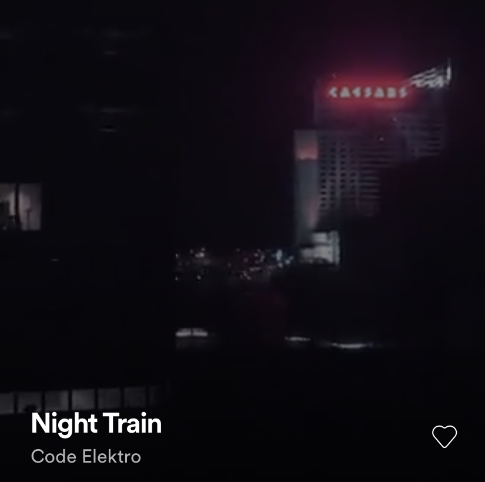
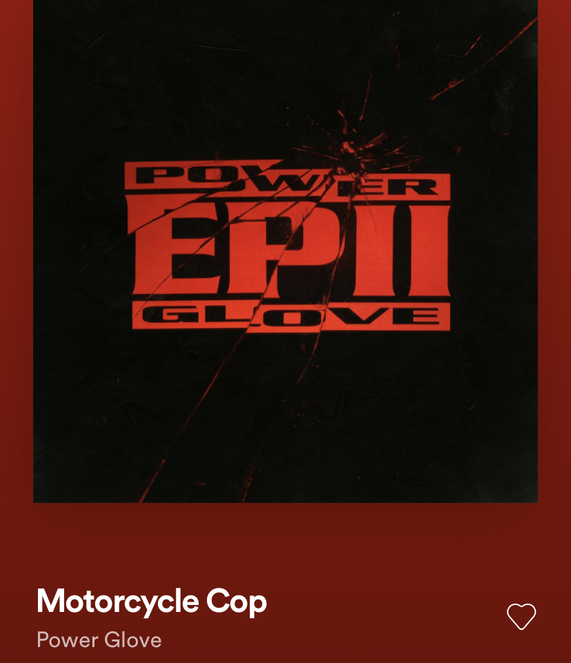
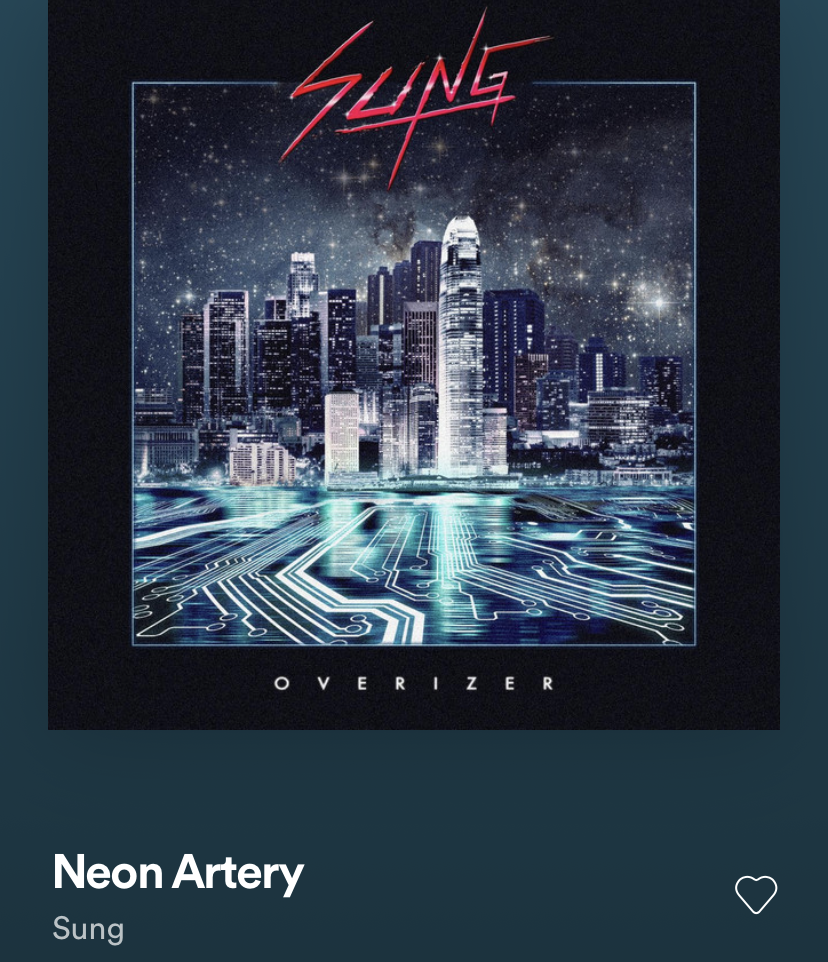
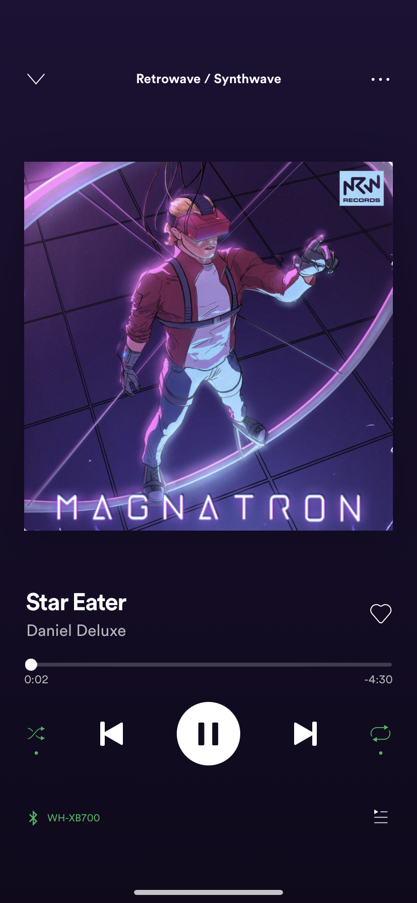

Results
• Inspiration •
Spotify: Retrowave/Synthwave





I really liked the neon light idea and I decided that it looked intentional
enough to not be tacky. It's fun. This caused a lot of extra work because lab
consistency is less work. But I enjoyed the change of scenery. I used the exact same
structure as my previous lab I just dressed it differently.
Because I couldn't find a place in my index lab for a filter I placed it
in my tacky lab so that the background image would be blured.
I fixed my problem by positioning my images and rearranging my css
so that nothing was broken. I used object fit for my last image.
In my tacky lab I went the extra mile and made my transforming images
active links.
Although this lab was a lot more work that it should have, I really enjoyed it all.
Here is my even tackier retrowave website.